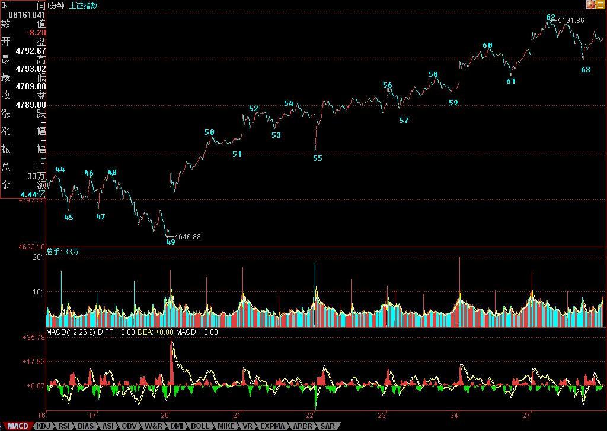

资金分歧日益严重的面子与里子
2007/8/27 16:15:38
现在，行情已经演化成这样一种格局，基金等正规部队与游资等负规武装之间展开博弈。对于基金来说，由于新鲜血液不断进来，因此，只要坚持自己的板块，就算来个五十年不变，也有新的血液进来筑成他们的长城；而对于游资来说，有不少这次是踏空的。530后，很多游资利用第一次反抽胜利大逃亡，结果不过逃了一个山脚，回头一看，什么都和他们没关系了。由此可见，游资的视角上和基金比起来，是极为短视的。当然，基金都是被正规所忽悠的人的钱，用着不心疼，就算10000倍市赢率买所谓的大盘蓝筹，也可以编出无数的理由，更不用说现在大盘蓝筹的市赢率还有很多连50都不到，至少还有200倍的忽悠空间，所以基金的长视显然是可以有恃无恐的。
游资不愿意为基金抬轿子，只能各自为战去攻击一些所谓的题材股。但这种攻击，还是有效的，因为这些所谓的题材股，基本都是中低价股票，所谓群众基础好。资本市场的管理是绝对不能走群众路线的，一走群众路线，那肯定是垃圾股满天飞。
所有的所谓成熟市场，都是分为泾渭分明的两个世界，就是正规为主的所谓蓝筹世界与负规为主的垃圾世界。这点，不用看远的，看看香港市场就知道。在资本市场，同一世界同一梦想，从来都是笑话。仙股能和汇丰长实同一世界同一梦想吗？这是世界的常态，但中国的资本市场，从大锅饭里来，总还有那无聊的做作。总是有人在资本市场也要一刀切，要问什么蓝筹垃圾，宁有种乎？
但这种游戏，最终都要被改变的。拣垃圾，在垃圾堆里寻宝的是一拨人；拿着蓝筹自渎的是另一拨人。两拨人将越来越老死不相往来，这才是最终的归宿。
现在，正在半路中，那些基金们，其实血液里也没有多少蓝筹的贵族气息，所以，偶尔混在垃圾堆里，反而觉得比较匹配；那些负规们，本来就是开野店的料，却还左摇右摆装名草，这样，行情，依然在这种边界的模糊两可中展开。
基金，不需要在二级市场骗人接筹码，而是公开地，无数人排着队争先恐后地进来成为新的举重能量。其实道理上一样，只是把赤裸裸的变成了道貌岸然的。而负规部队们，注定名声不会好了，但他们也从不在乎这玩意。负规可以潜规则正规，如此的中国特色，怎么也要特色N年，这样的负规，又有什么可抱怨的？
所谓的资金分歧，其实只是表面现象，给分歧掉的资金，不过都是不入流的资金。8228、2882，其实还不都是那唯一的一？
技术上，今天没什么可说的。回抽5089点，如此而已。当然，5089是否一天回抽就能确认，这显然不大可能。但行情完全可以先上攻，再以周线等形式进行回抽确认。当然，行情具体怎么走，没必要预测，看图作业就可以。
图形上，49点开始的走势简直是教科书。52-55的1分钟中枢，55-58的线段离开，58-59的回抽不跌回形成1分钟的第三类买点。然后，后面唯一的两种可能，更大级别中枢，与继续中枢上移直到出现新的1分钟中枢。显然，走势选择了后者，目前，可以暂时把这新的1分钟中枢看成是60-63。因此，从短线看，从49开始的1分钟上涨走势什么时候结束，就是短线唯一的主题。这相当简单，学过本ID课程的都应该怎么处理，应等待什么，那什么一出现，就该如何。（什么是什么？权当一个作业，这都不会，请复读。）
个股方面，有些人相当奇怪。竟然可以有这样的逻辑，例如对600139，他们意思是，如果不被洗干净，就不会有今天了，所以是本ID在犯坏，要把他们都给洗出去。然后这些人又在开始唠叨什么什么怎么还不怎样怎样，这些人，最该干的事情就是拿豆腐撞头去。知道本ID课程里对以前已经有的技术分析系统只说了均线系统吗？知道本ID在课程里说过，没有吻就没有高潮之类的话吗？均线系统没有粘合之前，怎么可能有单边的拉升？600139这种典型的a+A+b调整后，然后一吻高潮的走势，难道本ID在课程里没说过？就算今天的600343、000600，难道没看到前面消魂一吻吗？就算中铝这种上市没多久的，7月20日前后那一吻，请问够消魂否？
更奇怪，有人怪本ID不提前告诉中铝，30元才开始说。说老实话，本ID确实没有说任何个股的兴趣，任何个股，就算是天天暴涨的，也同样有怨大头。而且本ID现在又不当庄家了，说了明显就给自己添麻烦。有些股票知道为什么洗那么长时间吗？其实可以明确地告诉各位，就是在洗本ID。但那些家伙都是脑子有毛病，你想本ID能被他们洗出去吗？简直脑子锈了。但无论如何，不管是谁干什么，技术是第一的，任何最终都在技术图表上显现出来。如果你能成为吻的高手，那自然就能不断消魂，该说的早说了，如果吻这么私人的事情都想让别人替代去实践，那么还是买块豆腐去吧。
先下，再见。
